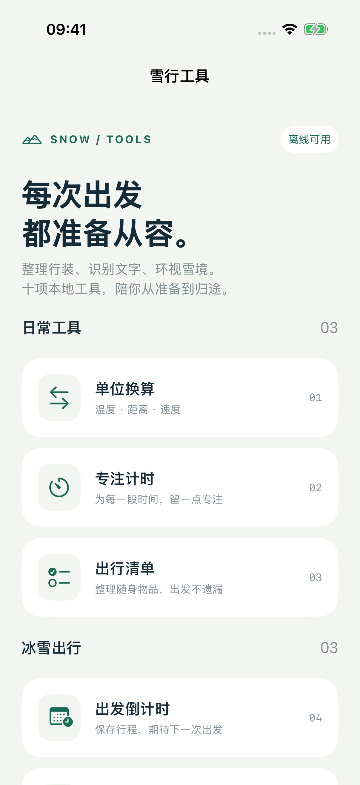
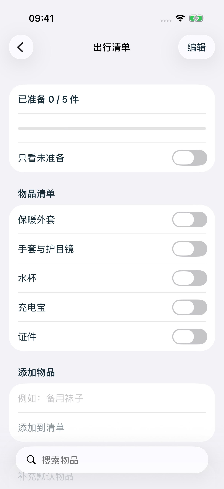
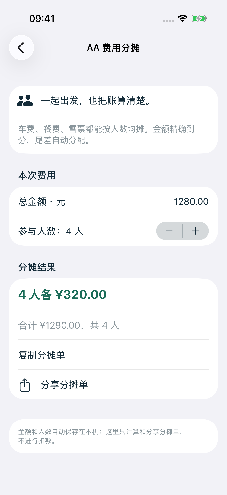
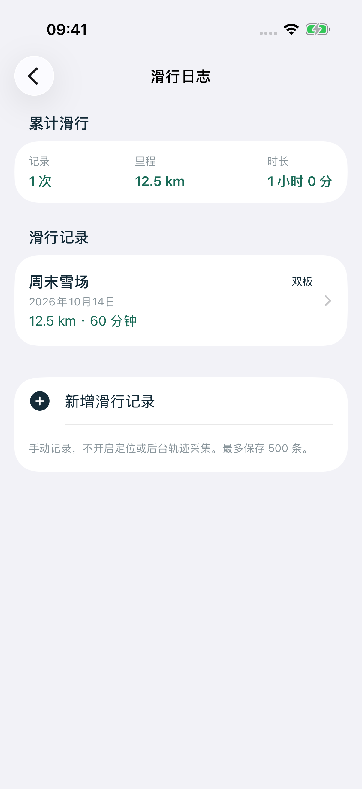
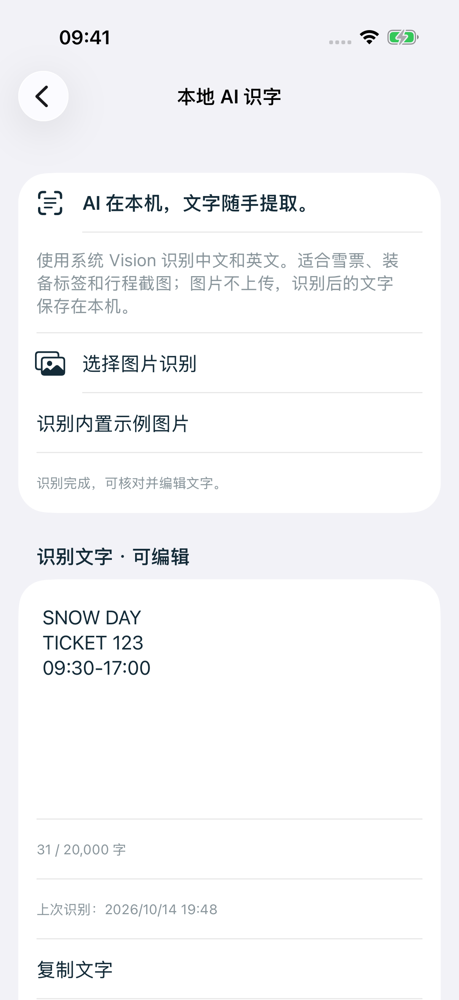
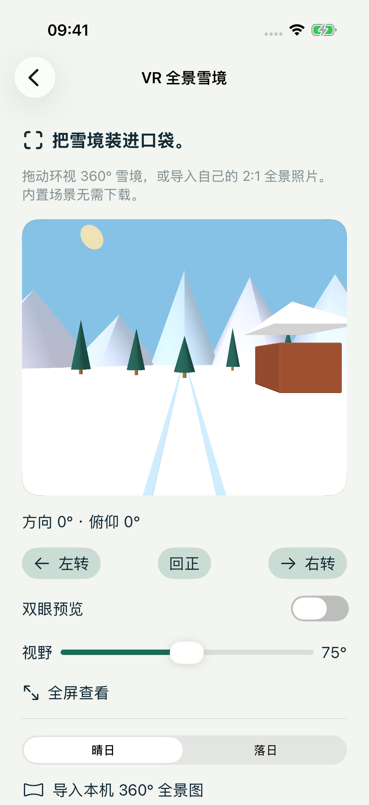
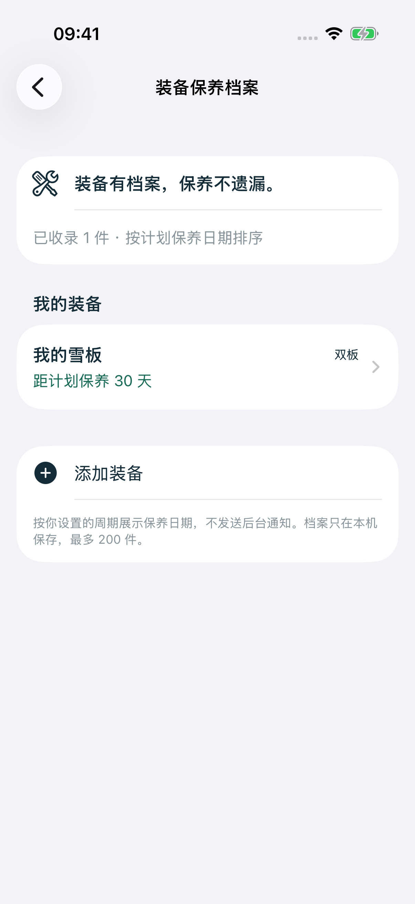
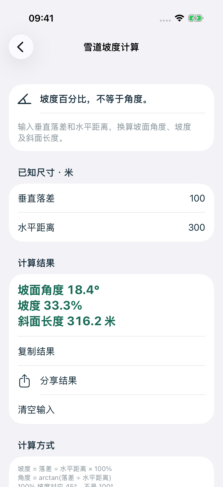

日常工具
单位换算
温度、距离、速度，一次换算，随手复制。

10本地实用工具
随时离线整理与记录
本机图片文字识别
一站从准备到归途
LESS TO WORRY. MORE TO ENJOY.
记得带上雪镜，也记得为自己留一点专注。雪行工具把清单、计算、识字与记录放在一起，让准备少一点忙乱，让每一次出发多一点期待。
YOUR POCKET TOOLKIT
日常也好用，雪季更顺手。
温度、距离、速度，一次换算，随手复制。
选择时长，开始或暂停，给当下留一点专注。
添加、排序、勾选。带齐装备，也带上好心情。
保存目的地与时间，下一次出发，值得期待。
车费、餐费、雪票，按人数算清，精确到分。
手动记下雪场、里程和时长，留住每次进步。
图片文字在设备上识别，编辑、复制或分享。
环视内置 3D 雪境，或打开自己的全景照片。
自定保养周期，记录每一次认真照料。
输入落差和水平距离，换算角度与百分比。
A CLOSER LOOK
实际 App 界面 · 点击查看完整截图







画面中的记录为示例数据；界面和可用服务以实际版本为准。
CLEAR ABOUT YOUR DATA
清单、日志、装备档案和识别文字保存在本机。OCR 图片在设备上处理。可选冰雪服务需要联网，姓名匹配与服务数据另按隐私政策处理。
阅读完整隐私政策 →01本地日志不采集定位轨迹
02识别图片不上传至本应用服务器
03复制与分享由你主动选择
04联网服务不冒充离线功能
WE'RE HERE TO HELP
查看常见问题、反馈使用体验，或了解如何管理本机数据。